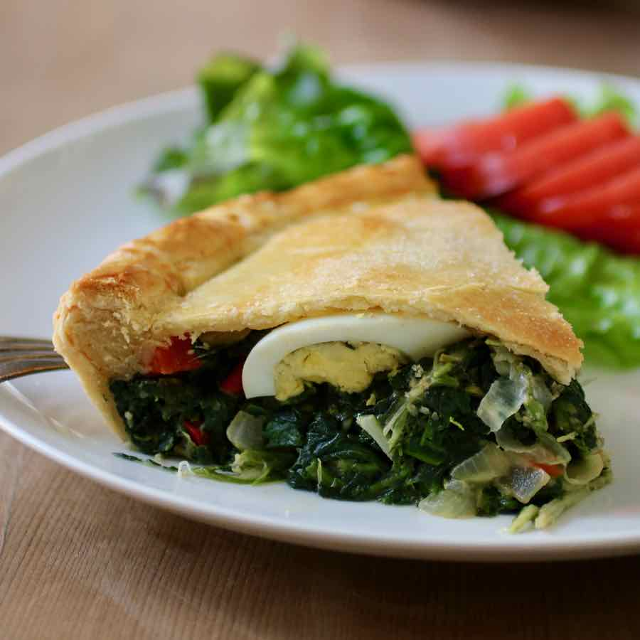
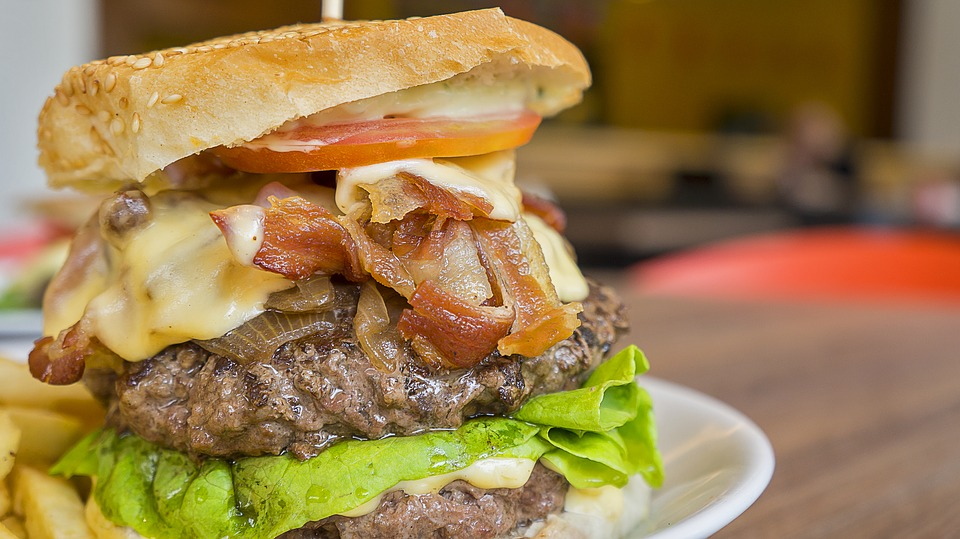
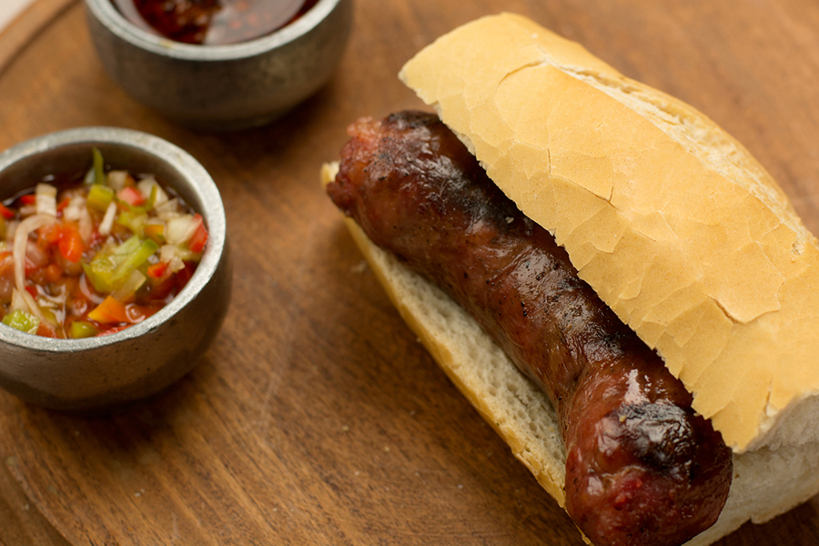
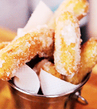
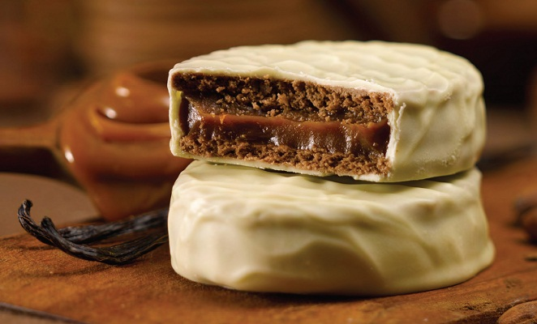
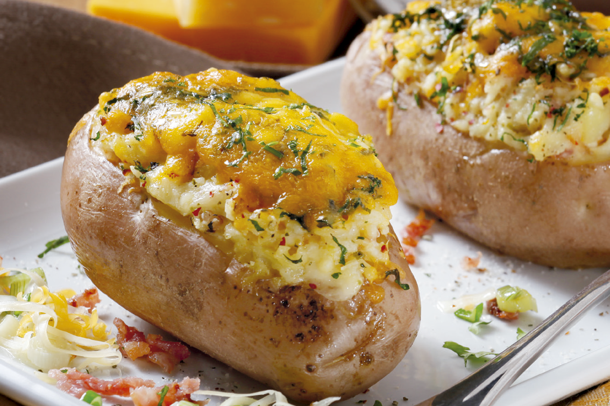
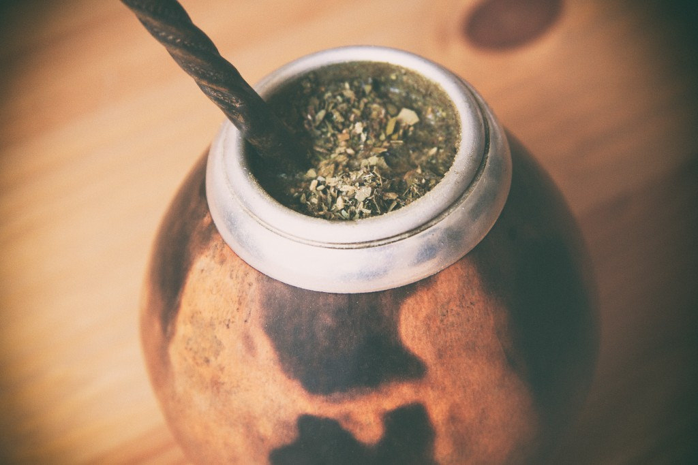

| Pascaculina |
$10 Using our housemade dough to create a flaky crust. Fresh spinach and egg warm up the inside for a filling treat. |
| Matambre |
$12 Always fresh never frozen, We stuff our steak with fresh pepper, onion and tomato along with egg. We top it with our housemade chimichurri. |
| Chivito |
$15.75 Burgers long last cousin, We use grilled steak between two toasted buns. Loaded with your choice of egg, cheese, onion, pepper and lettuce we dare you to finish this juicy delight. Oh, and get your napkins. |
| Asado |
$17 Juicy short cut ribs grilled over our firewood grill. We serve 'em up with a caprese salad using imported olive oil. |
| Choripan |
$11 Pork sausage snuggled between our fresh french bread. Served up with a side of chimichurri. |
| Empanada |
$5ea Fluffy flaky crust we let you choose your fillin'! Ham and cheese. Veggie. Ground beef or sausage! |
| Parrillero |
$30 Feeds 4 people. Our sampler of meats include: Morcilla, Sweet Morcilla, chinchulin, asado strips and chorizo. |
| Milanesa napolitana |
$20 Served with french fries on the side. We bread our steak and then we put delicious ham and melty cheese on top. |






